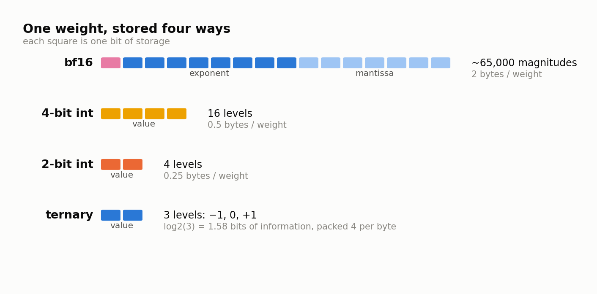

Chapter 5 — Numbers in a Computer (bits, bytes, and what precision costs)#
This chapter builds the vocabulary the rest of the book runs on: what a bit and a byte are, how a computer stores a real number in floating point, why bf16 became the training default, how integers plus a shared scale factor can stand in for real numbers, and exactly how many distinct values k bits can hold. Then it does the arithmetic that motivates the entire LOGOS project — how many bytes a model actually occupies — including the awkward accounting detail that small models force you to confront.
Bits, bytes, and the only formula you need#
A bit is one binary digit: a 0 or a 1. A byte is eight bits. That is the whole foundation.
When someone says a model is "16-bit," they mean each parameter — each adjustable number inside the network — is stored using 16 bits, which is 2 bytes. "4-bit" means 4 bits per parameter, half a byte. The parameter is conceptually a real number like −0.0374; the bit width is how much space you spend describing it.
The memory a model's weights occupy is then just multiplication:
weight bytes = N × b / 8where N is the number of parameters and b is bits per parameter. Do it once slowly. A model with 1,000,000 parameters at 16 bits each occupies 1,000,000 × 16 = 16,000,000 bits, which is 2,000,000 bytes, or 2 MB. Now a real one from the LOGOS ladder: the 25M model has 24,903,680 non-embedding parameters, so at 16 bits that body is 49,807,360 bytes, just under 50 MB. At 4 bits it is 12,451,840 bytes, about 12.5 MB. At 1.58 bits, roughly 4,918,000 bytes — under 5 MB.
Floating point: sign, exponent, mantissa#
Real numbers are not integers, and a computer has to encode them somehow. The standard encoding is floating point, which works like scientific notation. A number such as −3.75 × 10^2 has three parts: a sign (negative), an exponent (the ×10^2, setting the scale), and a mantissa (the 3.75, setting the detail). Floating point does this in base 2, splitting the available bits into a sign bit, a block of exponent bits, and a block of mantissa bits.
The split is a genuine trade-off. Exponent bits buy dynamic range — how enormous and how minuscule a number the format can express at all. Mantissa bits buy precision — how finely it distinguishes two nearby numbers. With a fixed budget you cannot have more of both.
| Format | Total bits | Sign | Exponent | Mantissa | Character |
|---|---|---|---|---|---|
| fp32 | 32 (4 bytes) | 1 | 8 | 23 | Wide range, high detail, expensive |
| fp16 | 16 (2 bytes) | 1 | 5 | 10 | Good detail, narrow range |
| bf16 | 16 (2 bytes) | 1 | 8 | 7 | fp32's range, coarse detail |
bf16 ("brain float 16") is the training default across the field, and the table shows why. It keeps all 8 exponent bits of fp32, so it spans exactly the same range of magnitudes, and gives up mantissa bits instead. Training is full of quantities with wild dynamic range, gradients above all: some are enormous, others near zero, and the scale shifts over the course of a run. fp16, with only 5 exponent bits, runs out of range and produces infinities or silent zeros — which is why fp16 training needs loss-scaling machinery to survive. bf16 does not have that problem, and its coarse 7-bit mantissa costs little, because gradient descent averages over millions of noisy updates and tolerates a little rounding noise per step.
LOGOS trains in bf16 everywhere, including on the low-bit arms: the master weights — the full-precision copies the optimizer actually updates — are bf16, with the quantization arithmetic computed in fp32 for numerical safety. Chapter 7 explains why a low-bit model still needs high-precision master weights.
Integers plus a scale factor#
There is a completely different way to store a real number, and it is the trick the entire field of quantization is built on: store a small integer, and multiply it by a shared scale factor.
Suppose the largest magnitude in a block of weights is 0.42, and you spend 4 bits per weight, giving integer codes from −8 to 7. Choose a scale factor s = 0.42 / 7 = 0.06, so the biggest weight maps onto the biggest code. Each weight w becomes the integer q = round(w / s), and you reconstruct it as q × s. Some illustrative weights run through that:
| Weight | w / s | Code q | Reconstructed q×s | Error |
|---|---|---|---|---|
| 0.42 | 7.00 | 7 | 0.42 | 0.00 |
| −0.13 | −2.17 | −2 | −0.12 | 0.01 |
| 0.07 | 1.17 | 1 | 0.06 | 0.01 |
| −0.38 | −6.33 | −6 | −0.36 | 0.02 |
| 0.21 | 3.50 | 4 | 0.24 | 0.03 |
You no longer have the original numbers. You have a grid spaced 0.06 apart, with every weight snapped to the nearest point. What you bought is storage: five 4-bit codes plus one shared scale, instead of five 16-bit floats.
The scale must be stored too, at higher precision — typically fp32, 4 bytes. That is negligible if many weights share it and expensive if they do not, a point that returns in the next section and again in Chapter 6.
What k bits actually buys you#
With k bits you can write 2^k distinct bit patterns, so k bits can name at most 2^k distinct values. That single line generates the whole ladder.
| Format | Bits per weight | Distinct values |
|---|---|---|
| bf16 | 16 | 2^16 = 65,536 patterns — effectively continuous at the scale of a weight distribution |
| 8-bit int | 8 | 256 |
| 4-bit int | 4 | 16 |
| 3-bit int | 3 | 8 |
| 2-bit int | 2 | 4 |
| ternary | log2(3) ≈ 1.58 | 3: −1, 0, +1 |
The jump from bf16 to 4-bit is not a modest loss of fidelity. It goes from a grid so fine it might as well be continuous down to sixteen tick marks — and then eight, four, and finally three.
Ternary deserves its own explanation, because "1.58 bits" looks like a typo the first time you see it. A ternary weight takes one of three values: −1, 0, or +1, times a scale. Stored on its own it would need 2 bits, since 1 bit gives only two options. But information is not measured in whole bits when values are packed together: a run of n ternary weights has 3^n possible combinations, and naming one of 3^n possibilities takes log2(3^n) = n × log2(3) bits. Since log2(3) ≈ 1.585, the information content is about 1.58 bits per weight.
A single base-3 digit is called a trit, by analogy with "bit" for a base-2 digit — and that is where the LOGOS model suite gets its name: TRIT.
The figure below lays the formats side by side: how each one spends its bits, and how many distinct values comes out the other end.

One honest wrinkle. Information theory says 1.58 bits per ternary weight, but real formats must write bytes, and LOGOS's export packs ternary weights as 2-bit codes — about 26% more than the theoretical minimum. That is why LOGOS measures footprints from actual packed bytes rather than trusting N × b / 8.
The memory math that drives the project#
Now scale it up. A one-billion-parameter model:
| Precision | Weight bytes |
|---|---|
| bf16 (16 bits) | 1e9 × 16 / 8 = 2,000,000,000 bytes = 2 GB |
| 4-bit | 1e9 × 4 / 8 = 500,000,000 bytes = 500 MB |
| ternary (1.58 bits) | 1e9 × 1.58 / 8 ≈ 197,500,000 bytes ≈ 200 MB |
Two gigabytes versus two hundred megabytes is the difference between a model that needs a datacenter accelerator and one that fits in a phone. That factor of ten is the prize. But the clean arithmetic hides two costs, and LOGOS reports both.
Scales are stored per group. A single scale for a whole weight matrix wastes most of the integer grid (Chapter 6 explains why), so real quantizers use one scale per small group of weights — LOGOS uses groups of 128. A group of 128 weights at 4 bits is 64 bytes of codes plus one fp32 scale at 4 bytes: 68 bytes for 128 weights, or 68 × 8 / 128 = 4.25 effective bits per weight, not 4.00. At 2 bits the same accounting gives 36 bytes per group, 2.25 effective bits. Small, but not zero — and a growing fraction as the bit width shrinks.
The embedding table stays 16-bit. A model's embedding table maps each token in the vocabulary to a vector; LOGOS uses a 32,768-entry vocabulary with tied input/output embeddings, kept in bf16 on every arm. At large sizes this is a rounding error. At small sizes it is the whole story.
Work the project's own case. The 25M ternary model has 24,903,680 non-embedding parameters, packed as 2-bit codes — 6,225,920 bytes of codes, and with the per-tensor scales and the never-quantized norm parameters the measured packed body is 6,277,120 bytes. The embedding is 32,768 × 512 = 16,777,216 parameters at 2 bytes each: 33,554,432 bytes. Total artifact: 39,831,552 bytes, of which the embedding is 84%.
The other consumer of bytes#
Weights are not the only thing in memory when a model runs. Generating text one token at a time requires remembering what was already computed for every previous token, and that store is the KV cache. It grows with conversation length and with the number of simultaneous users — and unlike weights it is not shared, since every concurrent user has their own.
A preview of the size, computed from the same 25M configuration: that model caches 2 × 8 layers × 2 key/value heads × 64 dimensions = 2,048 values per token, at 2 bytes each in bf16, so 4,096 bytes per token of context. At an 8,192-token context, that is 33,554,432 bytes — over five times the 6.28 MB weight body, for a single user.

Chapter 8 unpacks that figure properly. For now, register the shape: as context grows the cache overtakes the weights, and a byte budget that counts only weights is counting the wrong thing.
What to remember#
A bit is a binary digit, a byte is eight of them, and weight memory is nothing more complicated than N × b / 8 — a formula worth being able to run in your head, because every argument in this book bottoms out in it. Floating point trades exponent bits for range against mantissa bits for detail, which is why bf16 keeps fp32's full exponent and throws away mantissa: training needs range far more than it needs decimals. Quantization replaces that machinery with small integers read against a shared scale factor, and since k bits can name at most 2^k values, the ladder from 4 bits to ternary runs 16, 8, 4, 3 distinct levels — with ternary's three values carrying log2(3) ≈ 1.58 bits of information, the number that gives TRIT its name. The savings are real and large — a billion parameters is 2 GB at bf16 and about 200 MB ternary — but real formats carry per-group scale overhead, ternary packs into 2-bit codes rather than 1.58, and at small scale a 16-bit embedding table can be 84% of the artifact, which is why LOGOS quotes body bytes and total bytes together and never one alone.